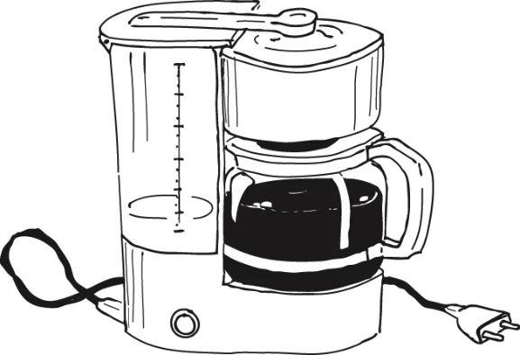

Le texte, les tableaux et le code sont transcrits d’après le PDF de formation. Les sauts de ligne suivent la présentation du support. Les exemples historiques sont commentés dans le cours optimisé.
Avant de démarrer ce TP, il convient d’avoir suivi les vidéos du module 1.
Traduire un besoin donné en algorithme.
Aucun
L’analyse du besoin et le cahier des charges suivant ont été réalisés.
On souhaite faire du café avec une cafetière de ce type :

Pour faire du café, il faut :
Les quantités d’eau et de café moulu sont variables en fonction du nombre de tasses de café souhaitées. Le nombre de tasses doit être connu avant la préparation du café.